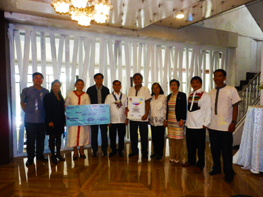
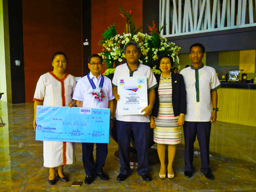
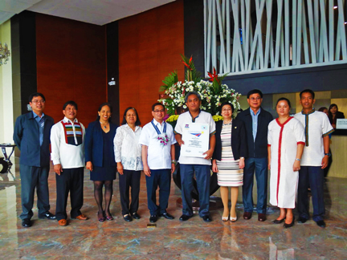

PR-2015-01 PSACAR-ABRA
19 MAY 2015
CSC cites PSA Abra with 2014 Seal of Excellence Award garnering a rating of 91.88%, Philippine Statistics Authority (PSA) – Abra Provincial Statistical Office was recognized by the Civil Service Commission with the 2014 Citizen’s Satisfaction Center-Seal of Excellence Award (CSC-SEA) in a ceremony held at Venus Park View Hotel, Kisad Road, Baguio City on May 18, 2014.
“The award is not only another milestone and honor for the provincial office, a showcase of teamwork but a challenge as well to continue providing quality service to the people”, declared Interim Provincial Statistics Officer Felixberto B. Perdido.
Symbolized by a wall-mountable glass seal that bears the CSC Seal of Excellence and a cash reward of Php 100,000.00, the award is conferred by the CSC to government agencies with excellent performance based on the result of the Anti-Red Tape Act-Report Card Survey (ARTA-RCS) and validated results.
Other CSC-SEA awardees in the Cordillera Administrative Region which were given recognition during the Awarding Ceremony with Acting CSC Chairman Robert S. Martinez as Guest of Honor are GSIS-Baguio City Branch, Philhealth-Apayao Business Center, Philhealth-LHIO Abra, Philhealth-LHIO Baguio, and Philhealth-LHIO Mt. Province.
For more information about this topic, please contact:
FELIXBERTO B. PERDIDO
(Statistician V)
Interim Provincial Statistics Officer
PSO - Abra
Page uploaded: May 22, 2015